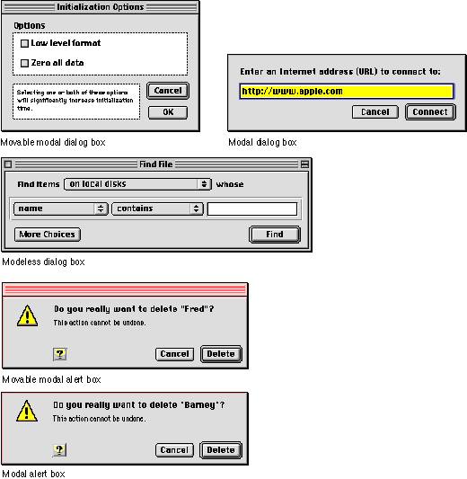

About Dialog Boxes
Dialog boxes are a type of specialized window. They provide a standard framework in which to present a set of choices to and elicit responses from the user. A dialog box may contain text, controls, and icons.Alert boxes appear when the system software or an application needs to communicate important information to the user, such as messages about error conditions and warnings about potentially hazardous situations or actions. An alert box is a type of dialog box and thus follows many of the same guidelines.
Each dialog box contains some text to indicate which command or condition caused it to be displayed and what its function is. In some cases, this text is a title for the dialog box.
There are five types of dialog boxes available through the Mac OS Toolbox:
Figure 3-1 The five types of dialog boxes
- Movable modal dialog boxes provide a means to request user input and make changes to a document while allowing the user to switch to another application. This is the preferred type of modal dialog box.
- Modal dialog boxes force the user to provide necessary information before carrying out the current operation. They cannot be moved or hidden.
- Movable alert boxes communicate warnings and error conditions while allowing the user to move the alert dialog around on the screen and switch to other applications. This is the preferred type of alert box.
- Alert boxes communicate warnings and error conditions. An alert box prevents any other activity until the user responds to the alert.
- Modeless dialog boxes accept user input and allow multiple changes to a document. Once open, they do not inhibit user activity.
